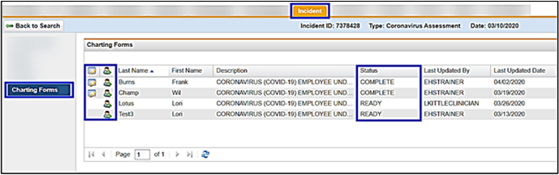

Reviewing Completed Charts in the Incident Tab
Use the Charting Forms option to track the charting status and view a completed chart.
- Click Charting Forms in the left menu.
This displays the list of participants included in the incident that have a chart(s) to complete. - The Status column displays "Pending" or "Complete".
If complete, click the Display Results icon to view the charted information. - Click the Jump to Chart icon to access the participant’s medical record.
